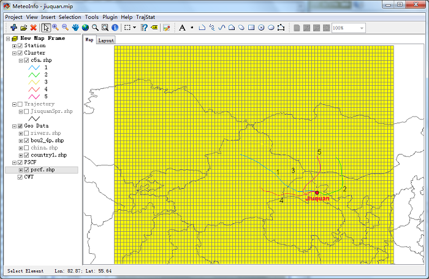

Create Grid Layer¶
Before performing PSCF or CWT analysis, a PSCF or CWT layer has to be created. Click ‘Create Grid Layer’ menu item, then set the extension, cell size and type of the layer in opened dialog.

Press ‘Create Layer’ button, and then set the filename of the layer in ‘Save As’ dialog. A grid layer will be created in ‘PSCF’ group.
ID, N_Traj, Nij, Mij, PSCF and WPSCF fields were added during PSCF layer creation.

To create CWT layer, type should be selected to ‘CWT’, Then CWT field width and precision should be set.

ID, N_Traj, Nij, CWT, WCWT fields were added to cwt shape file.